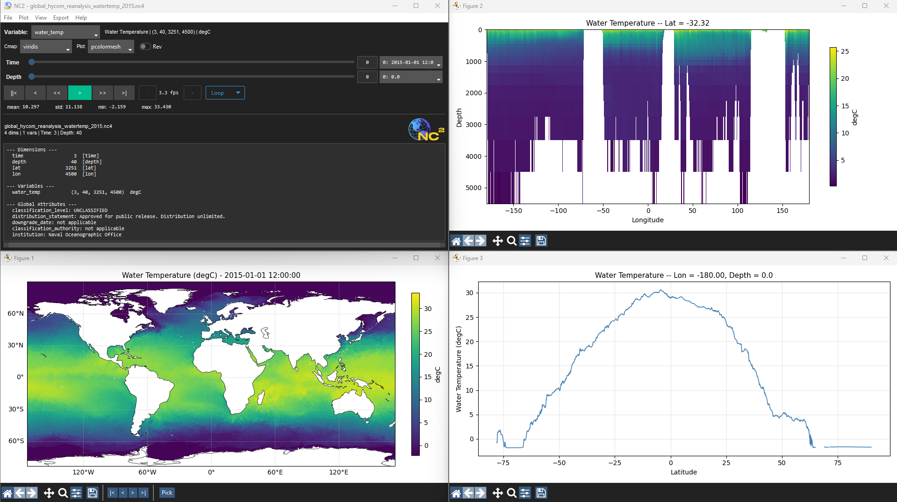

Lightweight NetCDF viewer with detached plot windows, GIF export, and full matplotlib customization.

Install
pip install nc2
Run
nc2 yourfile.nc
Features
- Spatial plots -- pcolormesh, contourf, contour, imshow, quiver, streamplot
- Cross-sections -- vertical and horizontal slices
- Timeseries -- click a point to extract
- Depth profiles -- vertical structure at any point
- GIF export -- animate over time
- All colormaps -- every matplotlib colormap
- Projections -- cartopy map projections
- Playback -- loop, bounce, speed control
- Flexible -- auto-detect dimensions or override manually
Formats
.nc .nc4 .cdf .netcdf .hdf5 .h5
Requirements
Python 3.8+ · numpy · matplotlib · netCDF4 · cartopy · ttkbootstrap · Pillow · imageio